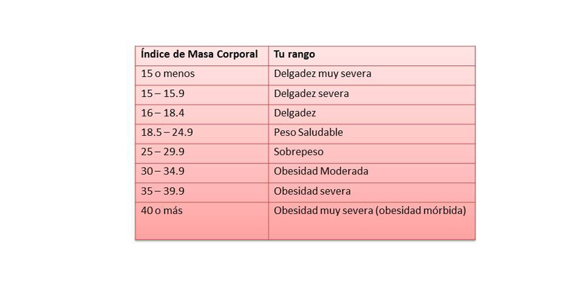

Inicio
¿Que es el IMC?
El índice de masa corporal (IMC) es un método utilizado para estimar la cantidad de grasa corporal que tiene una persona, y determinar por tanto si el peso está dentro del rango normal, o por el contrario, se tiene sobrepeso o delgadez.
Ingrese la altura:
Ingrese el peso:
Calcular
producto:
Tabla del IMC
